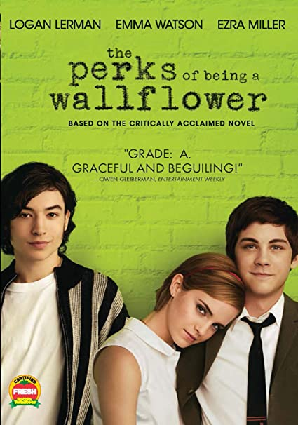

Las ventajas de ser invisible (The perks of being a wallflower).

Charlie es un estudiante del primer año de preparatoria. Es muy introvertido y lento haciendo amigos, el primer día de clases luce nervioso
y preocupado por hacer amigos, y que al final de las clases solo se haya hecho amigo de su profesor de literatura, el Sr. Anderson.
Ese mismo día, en un partido de futbol americano, Charlie se arma de valor y empieza a conversar con Patrick, un carismático estudiante de
último año y con su hermanastra, Sam, por quien siente un flechazo instantáneo. Desde ese mismo día se vuelven amigos.
Con el paso de los días, lo presentan a sus demás amigos y lo hacen formar parte de su grupo de inadaptados, sobre todo, luego de enterarse
de que el mejor y único amigo de Charly se había suicidado al año anterior. Charly empieza a sentirse cómodo y confiado con sus nuevos
amigos con los que descubre un mundo nuevo, lleno de música, teatro y momentos inolvidables.
En Navidad, el grupo organiza un Amigo invisible. A pesar de que Sam no era el Amigo invisible de Charlie, ella le regala una máquina de
escribir, en agradecimiento por ayudarla con sus exámenes. Ellos comienzan a hablar sobre sus relaciones: Charlie le confiesa que no ha
tenido novia ni ha besado a una chica. Ella también confiesa que su primer beso cuando tenía 11 años con el jefe de su padre. Sam después
le dice a él que quiere que el primer beso de Charlie sea de alguien que lo ama y ella besa a Charlie, a pesar de estar saliendo con otra
persona en ese momento.
Sam, Patrick y el resto de sus amigos son parte de The Rocky Horror Picture Show en un teatro. Sam hace de Janet y Patrick de Dr.
Frank-N-Furter. Con el tiempo, Charlie forma parte del elenco cuando el novio de Sam, Craig, no puede. Una noche, Charlie remplaza al
novio de Sam, y tiene que mirar a Sam en ropa interior y tocar sus senos. Un tiempo después, Mary Elizabeth invita a él a un baile de
a escuela y Charlie acepta. Después del baile, Mary Elizabeth lleva a Charlie a su casa, se besan y ella declara lo contenta que está
con él como su novio. Como no quería herir sus sentimientos, Charlie sigue siendo de mala gana su novio.
Mary Elizabeth domina la relación, y Charlie crece irritado por ella. En una fiesta, ellos se separan durante un juego de Verdad o Reto
cuando Charlie, sin pensar, besa a Sam después de haber sido retado a besar a la chica más linda de la habitación, y una precipitación se
produce. Charlie vuelve al aislamiento y la soledad después de que Patrick le dice que se aleje mientras las cosas se calman. Durante el
aislamiento de sus amigos, Charlie tiene recuerdos de la muerte de su tía Helen, que murió un accidente de coche en su séptimo cumpleaños.
Más tarde, Patrick rompe con su novio Brad, un atleta popular que se encuentra en el armario, después que su estricto padre los encontró
juntos y comenzó a golpear a su hijo. En la cafetería de la escuela, Brad le dice a Patrick que es un "maricón". Él se enfurece y ataca
a Brad, pero sus amigos lo defienden y lo golpean hasta que Charlie interviene. Él se desmaya, y al despertarse, ve que sus nudillos
están con moretones, los amigos de Brad en el suelo y todos los estudiantes mirando a Charlie como un raro. Después de esto, Sam,
Patrick, y el resto del grupo se reconcilia con Charlie, volviendo a ser amigos; Mary Elizabeth superó la ruptura con él.
Sam termina con Craig, después de saber que él la ha estado engañando todo el tiempo. Ella recibe su carta de aceptación para la
universidad de Pensilvania, diciendo que debe partir inmediatamente para un programa de verano de integración. La noche antes que ella
parte, Sam lleva a Charlie a su habitación, donde le pregunta por qué nunca la invitó a salir, y después de varias confesiones sinceras
entre sí, se besan. Cuando ella lo comienza a tocar sexualmente en la pierna, Charlie se retira brevemente. En la mañana, Charlie se
despide mientras Sam y Patrick salen para la universidad, dejándolo emocionalmente sacudido y solo de nuevo.
Charlie se va a su casa vacía, con recuerdos severos y tristes de su tía Helen y su muerte. Él llama a su hermana, Candace, donde
se culpa por la muerte de su tía Helen, porque murió llevándole su regalo de cumpleaños. Ella cree que se quiere suicidar, entonces
le dice a una amiga suya que llame a la policía. Charlie está en la cocina mirando a un largo cuchillo, y se desmaya cuando la policía
llega, rompiendo la puerta. Él despierta en un hospital. Le cuenta a la doctora que su tía a veces estaba loca, por eso es que tiene esas
visiones. La doctora le cuenta a sus padres que Charlie era abusado sexualmente por su tía cuando era pequeño y que ha reprimido los
recuerdos, porque él la quería.
Charlie se mete en terapia, se recupera y regresa a su casa, donde es visitado por Sam y Patrick. Los tres van a un restaurante
y Sam explica cómo es la vida en la universidad, y cómo ella encontró "La Canción del Túnel" que Charlie estaba buscando. Los tres
visitan el mismo túnel; Charlie besa a Sam y esta vez él se pone de pie en la parte trasera mientras van conduciendo en la camioneta
escuchando "La canción del Túnel", que no es otra que "Heroes" de David Bowie.